CECILIA GUADALUPE TORRES CASTAÑEDA
SOBRE MÍ... 
Cecilia Guadalupe Torres Castañeda es estudiante de Ingeniería Mecatrónica en el Tecnológico de Monterrey, Campus Sinaloa. Sus intereses académicos se centran en la robótica, la automatización y la programación. Profesionalmente, aspira a especializarse en el sector de la tecnología y la automatización industrial, con el objetivo de diseñar soluciones innovadoras que optimicen los procesos productivos.
GUSTOS 

Me considero una persona activa que disfruta plenamente de la vida al aire libre y de los pequeños placeres diarios. Me apasionan los animales y pasar tiempo rodeado de mascotas, siempre buscando pretextos para salir, explorar nuevos lugares y, por supuesto, hacer una parada obligatoria por un buen helado en un día soleado.
TAREA I
CECILIA GUADALUPE TORRES CASTAÑEDA
CV
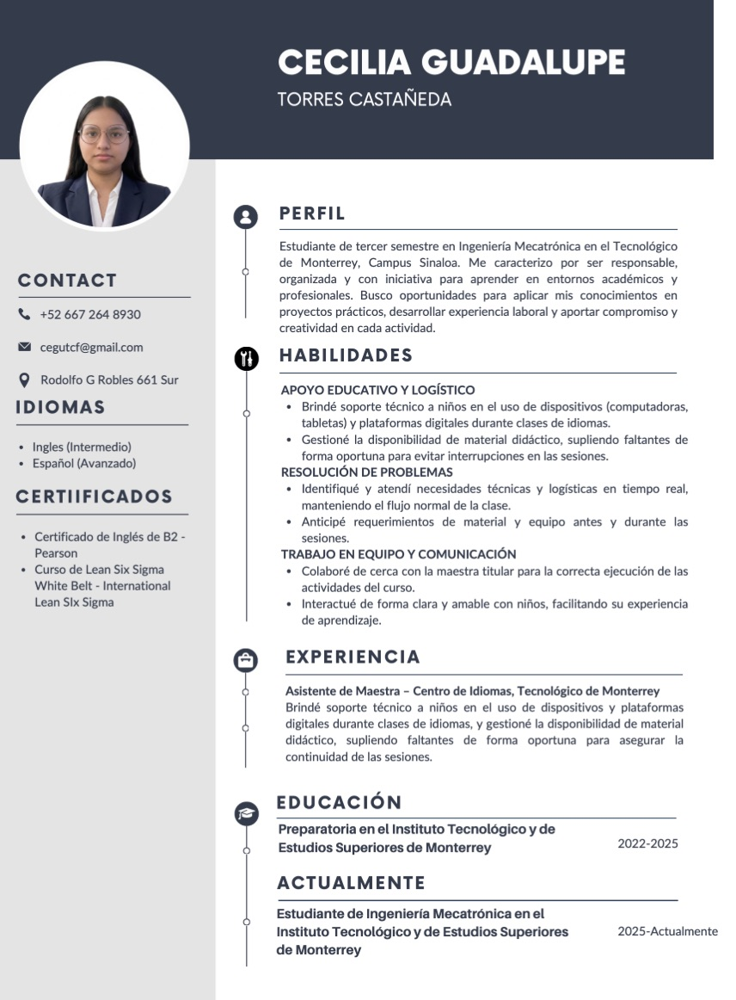
- Descripción de la actividad: Consiste en la elaboración de un Curriculum Vitae (CV) profesional, estructurando de forma clara e impactante la trayectoria académica, experiencia laboral, habilidades clave y logros destacados.
- Propósito comunicativo: Presentar y promocionar el perfil profesional de manera estratégica para causar una primera impresión positiva ante reclutadores y empleadores, demostrando idoneidad para una vacante o posición específica.
- Aprendizajes: Capacidad para jerarquizar información laboral relevante, redacción sintética orientada a logros, uso de palabras clave del sector y diseño visual limpio y profesional de un perfil laboral.
- Aplicabilidad en el futuro profesional o laboral: Indispensable para la inserción y crecimiento en el mercado de trabajo, postulación a vacantes laborales, convocatorias académicas, becas y proyectos de consultoría o freelance.
Elevator Pitch
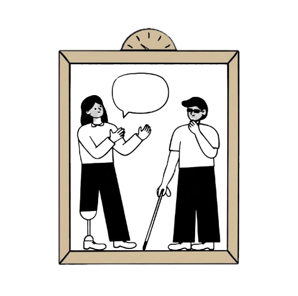
- Descripción de la actividad: Consiste en la creación y presentación breve de un discurso persuasivo y conciso (Elevator Pitch) diseñado para presentarme.
- Propósito comunicativo: Persuadir y captar la atención inmediata de un interlocutor clave para despertar su interés y generar una oportunidad de reunión o contacto posterior.
- Aprendizajes: Desarrollo de síntesis discursiva, capacidad de argumentación bajo presión de tiempo, proyección de voz, lenguaje corporal persuasivo y estructura de mensajes de alto impacto.
- Aplicabilidad en el futuro profesional o laboral: Esencial para entrevistas de trabajo, rondas de financiamiento, prospección de clientes, presentaciones de proyectos a directivos y redes de contactos (networking).
Elevator Pitch: Ver video
FICHA DE LECTURA
TAREA II
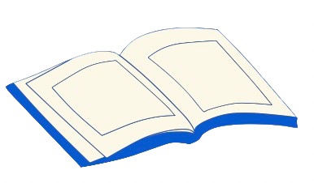
- Descripción de la actividad: Consiste en la elaboración de un documento de análisis crítico donde se registran, organizan y sintetizan los datos bibliográficos, ideas principales y argumentos clave de un texto o lectura académica.
- Propósito comunicativo: Registrar, resumir e interpretar un texto formalmente para documentar la comprensión lectora, facilitar la recuperación posterior de la información y sustentar análisis teóricos o académicos.
- Aprendizajes: Desarrollo de lectura crítica, habilidad para extractar ideas centrales, técnicas de resumen y esquematización, e identificación de la postura e intención del autor.
- Aplicabilidad en el futuro profesional o laboral: Útil para la investigación documental, elaboración de informes técnicos, análisis de normativas o mercado, preparación de diagnósticos empresariales y fundamentación teórica de proyectos laborales.
TAREA III
Organizador visual
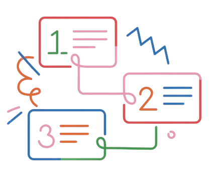
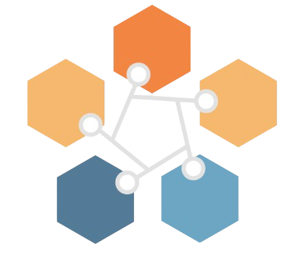
- Descripción de la actividad: Consiste en la creación de un organizador visual, donde se esquematizan y sintetizan el propósito de mi carrera.
- Propósito comunicativo: Estructurar y presentar visualmente la información de forma jerárquica para facilitar la rápida comprensión de un tema complejo, mostrando las interconexiones entre antecedentes, aplicaciones e impacto en la sociedad.
- Aprendizajes: Capacidad para abstraer y categorizar conceptos, sintetizar lecturas técnicas o teóricas en esquemas claros, e identificar la estructura argumentativa de un texto.
- Aplicabilidad en el futuro profesional o laboral: Útil para la fase de ideación y planificación de proyectos, estructuración de presentaciones ejecutivas, síntesis de datos para equipos multidisciplinarios y sistematización de procesos complejos.
TAREA IV
Reseña o póster científico
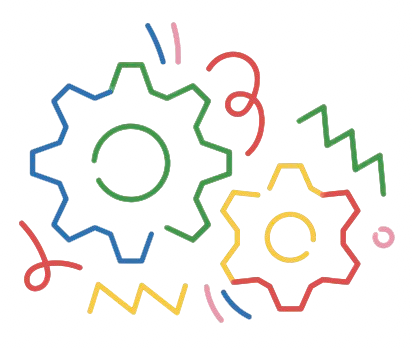
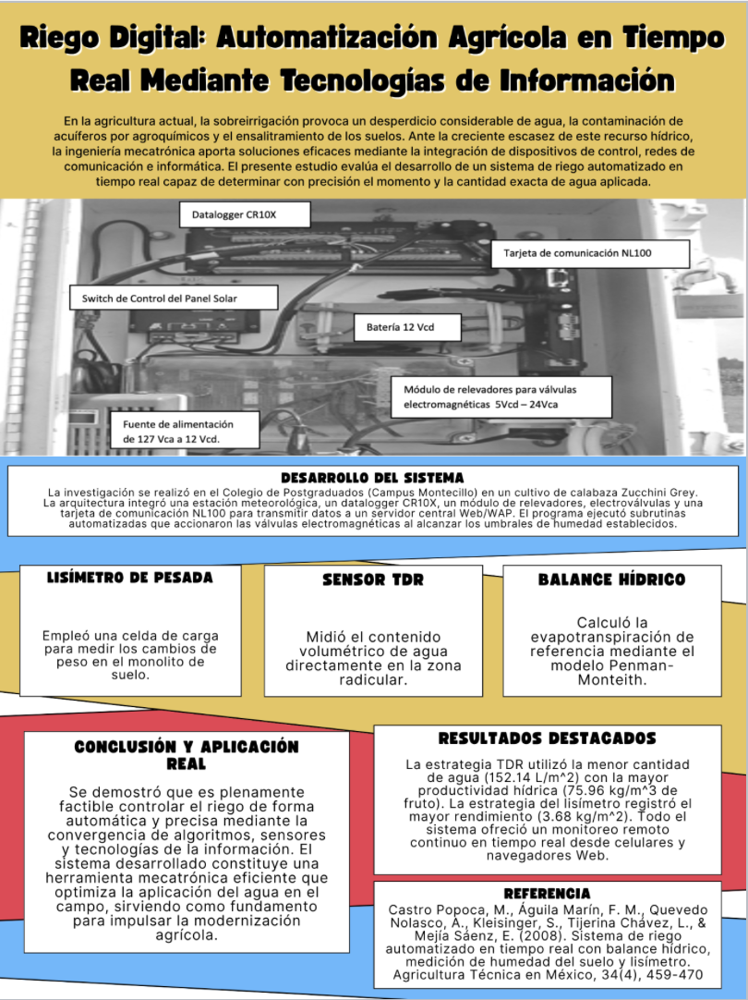
- Descripción de la actividad: Consiste en la elaboración de un póster científico, estructurando de forma gráfica los elementos clave de una investigación: título, introducción, metodología, resultados, discusión, conclusiones y referencias.
- Propósito comunicativo: Divulgar hallazgos científicos o académicos de manera gráfica, sintética y atractiva, permitiendo que la comunidad especializada o el público general comprenda los aspectos más relevantes de un estudio en una lectura rápida.
- Aprendizajes: Habilidad para sintetizar extensos informes de investigación, jerarquización de información visual y textual, diseño de gráficos informativos, y capacidad de exposición clara y concisa ante un auditorio.
- Aplicabilidad en el futuro profesional o laboral: Indispensable para la participación en congresos, simposios y ferias de innovación, presentación de avances de I+D en empresas, y divulgación de proyectos o diagnósticos técnicos ante comités ejecutivos.
Riego Digital: Automatización Agrícola en Tiempo Real Mediante Tecnologías de Información
En la agricultura actual, la sobreirrigación provoca un desperdicio considerable de agua, la contaminación de acuíferos por agroquímicos y el ensalitramiento de los suelos. Ante la creciente escasez de este recurso hídrico, la ingeniería mecatrónica aporta soluciones eficaces mediante la integración de dispositivos de control, redes de comunicación e informática. El presente estudio evalúa el desarrollo de un sistema de riego automatizado en tiempo real capaz de determinar con precisión el momento y la cantidad exacta de agua aplicada.
DESARROLLO DEL SISTEMA
La investigación se realizó en el Colegio de Postgraduados (Campus Montecillo) en un cultivo de calabaza Zucchini Grey. La arquitectura integró una estación meteorológica, un datalogger CR10X, un módulo de relevadores, electroválvulas y una tarjeta de comunicación NL100 para transmitir datos a un servidor central Web/WAP. El programa ejecutó subrutinas automatizadas que accionaron las válvulas electromagnéticas al alcanzar los umbrales de humedad establecidos.
- LISÍMETRO DE PESADA: Empleó una celda de carga para medir los cambios de peso en el monolito de suelo.
- SENSOR TDR: Midió el contenido volumétrico de agua directamente en la zona radicular.
- BALANCE HÍDRICO: Calculó la evapotranspiración de referencia mediante el modelo Penman-Monteith.
RESULTADOS DESTACADOS
La estrategia TDR utilizó la menor cantidad de agua (152.14 L/m²) con la mayor productividad hídrica (75.96 kg/m³ de fruto). La estrategia del lisímetro registró el mayor rendimiento (3.68 kg/m²). Todo el sistema ofreció un monitoreo remoto continuo en tiempo real desde celulares y navegadores Web.
CONCLUSIÓN Y APLICACIÓN REAL
Se demostró que es plenamente factible controlar el riego de forma automática y precisa mediante la convergencia de algoritmos, sensores y tecnologías de la información. El sistema desarrollado constituye una herramienta mecatrónica eficiente que optimiza la aplicación del agua en el campo, sirviendo como fundamento para impulsar la modernización agrícola.
REFERENCIA
Castro Popoca, M., Aguila Marín, F. M., Quevedo Nolasco, A., Kleisinger, S., Tijerina Chávez, L., & Mejía Sáenz, E. (2008). Sistema de riego automatizado en tiempo real con balance hídrico, medición de humedad del suelo y lisímetro. Agricultura Técnica en México, 34(4), 459-470
TAREA V
Podcast
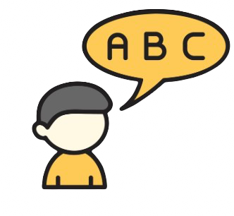
- Descripción de la actividad: Consiste en la planificación, redacción de guion y grabación de un episodio de podcast, integrando lenguaje verbal, recursos sonoros, tono de voz y estructura narrativa para abordar un tema académico o profesional de forma auditiva.
- Propósito comunicativo: Informar, educar o entretener a una audiencia específica a través del formato de audio digital, transmitiendo ideas complejas mediante un tono accesible, cercano y dinámico que fomente el engagement.
- Aprendizajes: Desarrollo de expresión oral y modulación de voz, estructuración de guiones técnicos y de contenido, síntesis auditiva, manejo de ritmo narrativo y aprovechamiento de herramientas de producción de audio digital.
- Aplicabilidad en el futuro profesional o laboral: Clave para la creación de contenido de marca (branded content), comunicación interna en empresas, estrategias de marketing digital, difusión de conocimiento especializado y fortalecimiento de la marca personal profesional.
Video del Podcast:
TAREA VI
Entrada de blog

- Descripción de la actividad: Consiste en la redacción y maquetación de una entrada de blog (blog post), integrando un título atractivo, subtítulos, texto estructurado en párrafos breves, enlaces y elementos visuales para abordar un tema de interés.
- Propósito comunicativo: Informar, opinar o educar a una audiencia digital de manera cercana y directa, facilitando la lectura rápida (escaneo visual) y fomentando la interacción del lector mediante comentarios o compartidos.
- Aprendizajes: Dominio del tono de redacción web, aplicación de técnicas de copywriting, estructuración de contenidos mediante títulos jerárquicos y optimización de la claridad discursiva para medios digitales.
- Aplicabilidad en el futuro profesional o laboral: Esencial para la gestión de estrategias de marketing de contenidos, posicionamiento SEO de marcas o empresas, comunicación corporativa externa y desarrollo del perfil profesional a través de blogs especializados.
Texto del blog:
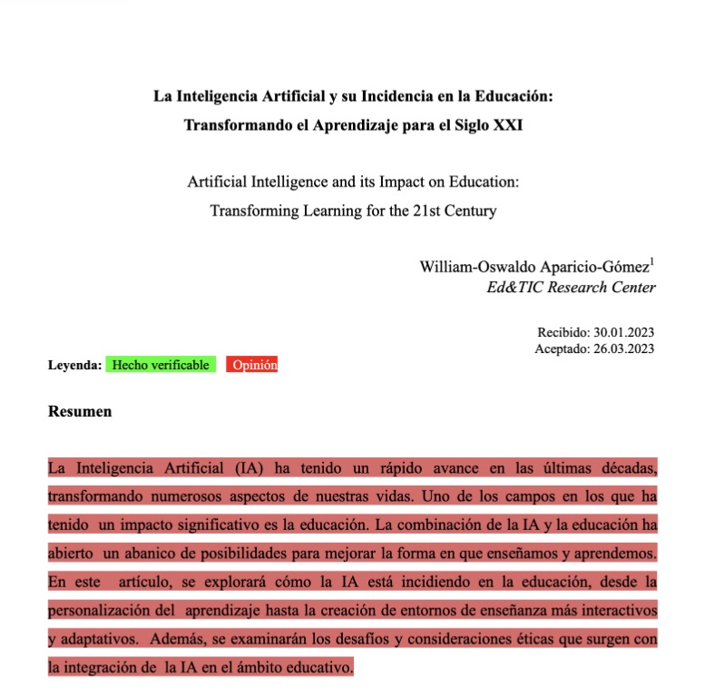
MAPA CONCEPTUAL
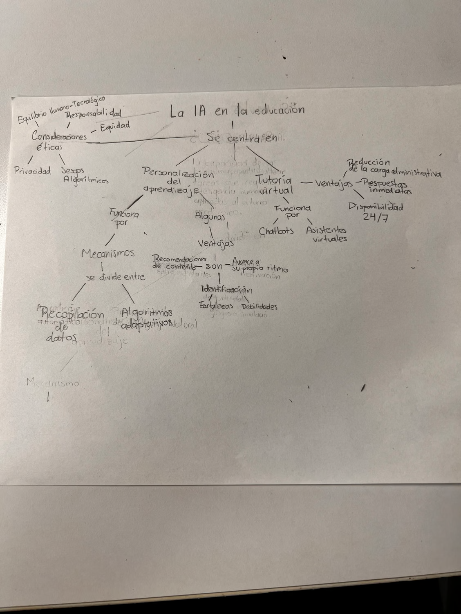
- Descripción de la actividad: Consiste en la elaboración de un mapa conceptual, donde se identifican, relacionan y jerarquizan gráficamente los conceptos clave de un tema determinado mediante el uso de nodos y conectores.
- Propósito comunicativo: Representar de forma lógica y estructurada las relaciones causa-efecto, inclusión o dependencia entre conceptos, facilitando la comprensión profunda de un cuerpo de conocimiento complejo.
- Aprendizajes: Capacidad de síntesis, pensamiento lógico-estructurado, identificación de ideas principales y secundarias, e integración de conectores gramaticales para dar coherencia visual a un tema.
- Aplicabilidad en el futuro profesional o laboral: Útil para la arquitectura de información en proyectos, diseño de procesos organizacionales, elaboración de manuales técnicos, planificación de estrategias de negocio y sistematización de flujos de trabajo.
MAPA MENTAL
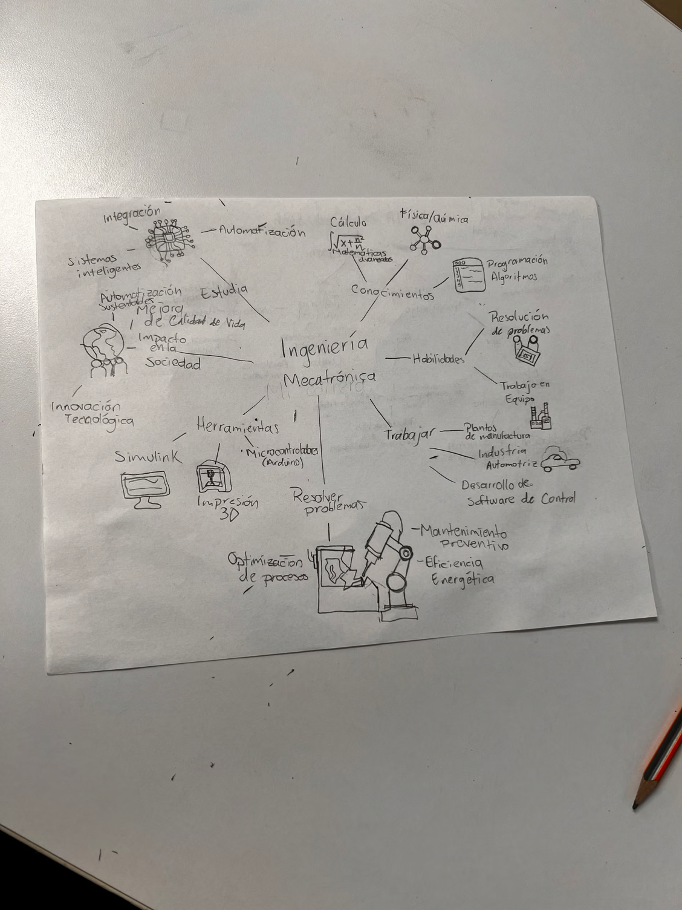
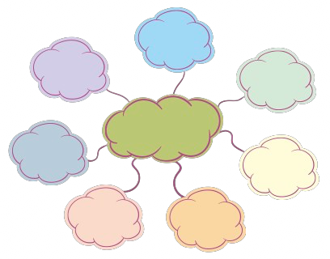
- Descripción de la actividad: Consiste en la elaboración de un mapa mental, diseñado para organizar visualmente los conceptos clave, ideas principales y conexiones de mi carrera.
- Propósito comunicativo: Sintetizar información de manera gráfica para facilitar la comprensión rápida, la asociación de ideas y el aprendizaje colaborativo.
- Aprendizajes: Capacidad para identificar conceptos centrales y estructurar pensamientos complejos en nodos visuales.
- Aplicabilidad en el futuro profesional o laboral: Permite esquematizar proyectos, planificar estrategias de comunicación, realizar sesiones de lluvia de ideas (brainstorming) en equipo y presentar información técnica de forma clara y accesible.
PATHWAY PARTNERS
ACTIVIDAD PADLET - PRÁCTICA II
DICCIÓN
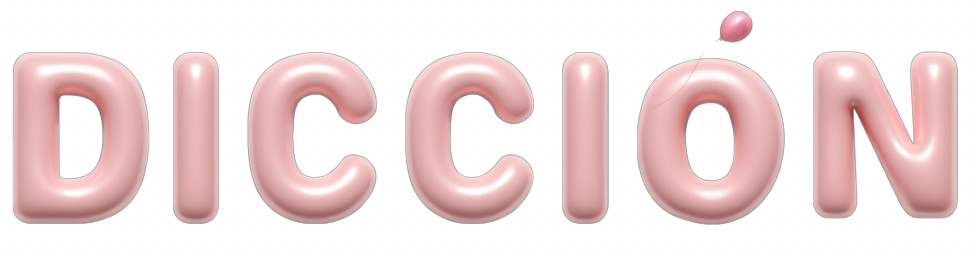
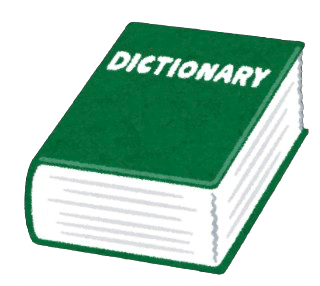
- Descripción de la actividad: Consiste en la ejecución de un ejercicio de entrenamiento vocal y articulación mediante la colocación de un lápiz de forma horizontal entre los dientes mientras se relata una historia, forzando la musculatura facial para pronunciar cada sílaba lo más claro posible.
- Propósito comunicativo: Mejorar la claridad fonética, la modulación y la gesticulación al hablar, asegurando que el mensaje oral sea completamente comprensible e inteligible para los oyentes, eliminando vicios de pronunciación o murmullos.
- Aprendizajes: Fortalecimiento de la musculatura orofacial, mayor conciencia sobre la vocalización de las consonantes y desarrollo de control respiratorio para sostener la dicción sin tensión.
- Aplicabilidad en el futuro profesional o laboral: Fundamental para hablar en público, realizar presentaciones ejecutivas de alto impacto, grabar contenido audiovisual o podcasts, moderar reuniones de trabajo y mantener una comunicación oral fluida y con autoridad.